Quick Start
Welcome to Water Reporter, it’s great to have you as part of the community. Our application is the easiest way to share and map your experiences on the world’s waterways and connect with growing network of organizations working to actively improve your local river, lake, or ocean. This Quick Start, provides everything you need to know to get up and running in about five minutes so you can start capturing your experiences
- Creating your account and setting up your profile
- Browsing the community
- Sharing your first report
- Connecting via reports and groups
Signup
To get started sharing your own experiences, connecting with others, or helping to improve water quality, you need to sign up for a free account. As a newly registered user, you’ll be able to explore the latest activity in the community as well as access a variety of features right form your smartphone or web browser. When you setup your account you will be able to tell us about yourself, join some groups, and start exploring. Follow the steps below:
Download the Water Reporter app from iTunes or Google Play. Launch the app and you will be directed to the registration page. Enter a valid email address and choose a password. When you're all done, tap "Sign Up."
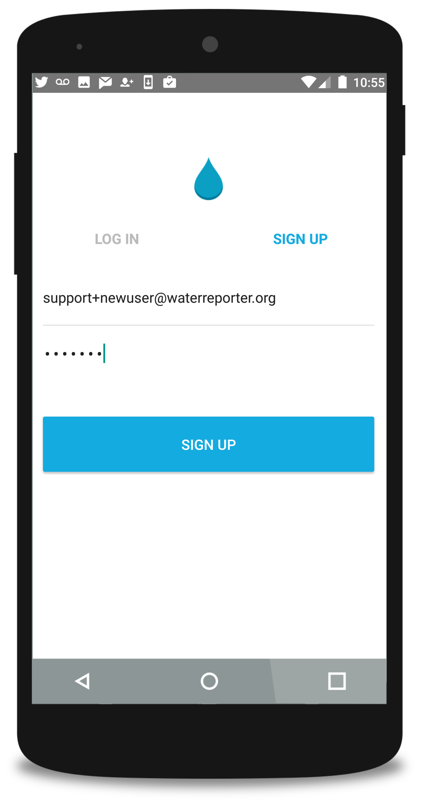Complete your profile information by providing a profile picture, your name, contact info, and a brief description. When you're all done tap next.
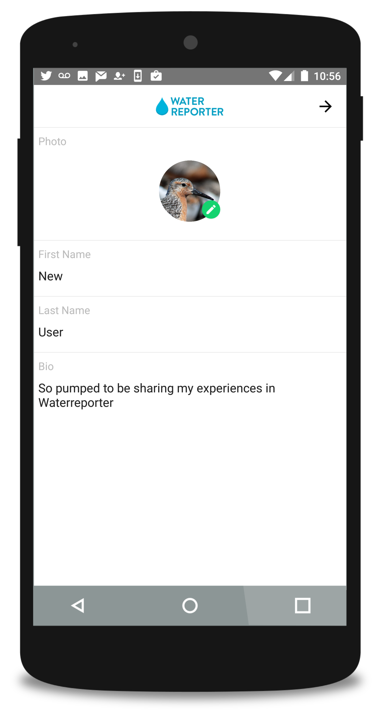If you see a group you'd like to share reports with, tap join. The group administrators will be notified that you have joined and you will be able to see other reports and actions taken by other members of the organization.
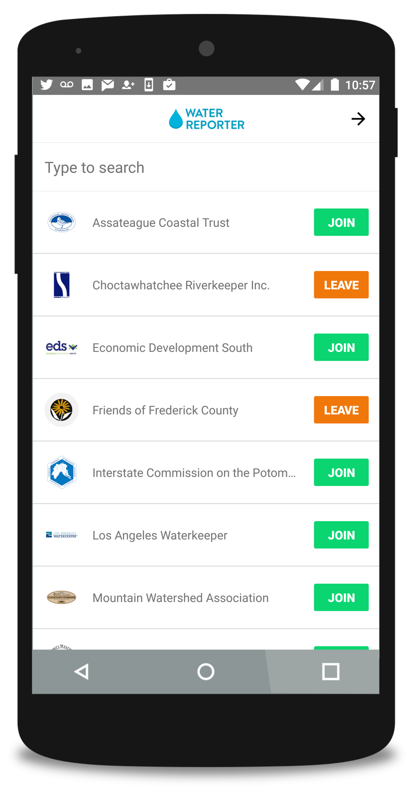At this stage you should see the latest activity shared by other Water Reporter users. Now with your profile setup you are ready to start sharing reports and exploring the community.
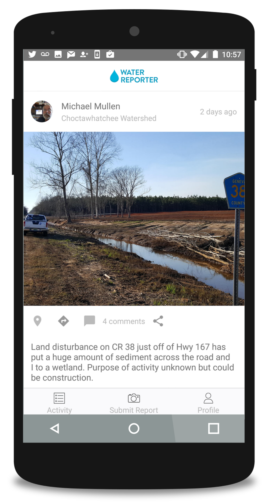Browse the Community
Water Reporter’s Activity Feed is a great way to stay on top of all the latest reports being shared by our active user base. It serves as a convenient launch pad for commenting on a report of interest, sharing a report to social media, and even getting turn by turn directions to the location. Our aim is to make it as easy as possible to stay up to date on the latest community activity while being exposed to observations and reports from a diverse array of watersheds. Below are a few ways you can interact with reports shared by our community members.Interacting with the Feed
Each report consists of simple routes to additional content or actions. Starting with the top of the report and working our way down, users will see the community member who posted, their profile picture (if applicable), date of the report, and the watershed it was shared from. Tap on the user’s profile picture to learn more about them, view a list of their observations, any actions taken, as well as view the groups they belong to. Under the report photo you can find a helpful toolbar, report description (if provided) as well as hashtags for categorizing the report (if provided).
Feed Overview
| 1 | Profile photo and name displayed for every user, routes to user's profile. |
|---|---|
| 2 | Watershed linked to report displayed at HUC 8 level |
| 3 | Report photo is geo-located and displayed |
| 4 | Pinpoint pulls up the report on the community map and loads in others nearby |
| 5 | Access turn-by-turn directions to report site |
| 6 | Converse and share updates on existing reports via comments |
| 7 | Explore all reports submitted on the Activity Feed. |
| 8 | Share a geo-located report from your mobile device |
| 9 | Search your reports and manage your profile |
Share your first report
Submitting reports is a fun and easy way to paint a living picture of how people enjoy their local resources. With Water Reporter you can document your favorite steep creek run, a morning dawn patrol at your local surf break, or any memorable moment on the water. We’ll ensure your reports are mapped, added to your profile, and made available for others to view in our community. Our mobile app is the fastest avenue to add a report in the moment or you can leave the smartphone at home and share a report through WaterReporter.org when you’re back online.
Tap the comment body and type a few brief sentences about what’s happening. Remember, you can always use hashtags to classify your report with others like it in the community. Tap on the camera to either snag a photo or add one from your photo roll.
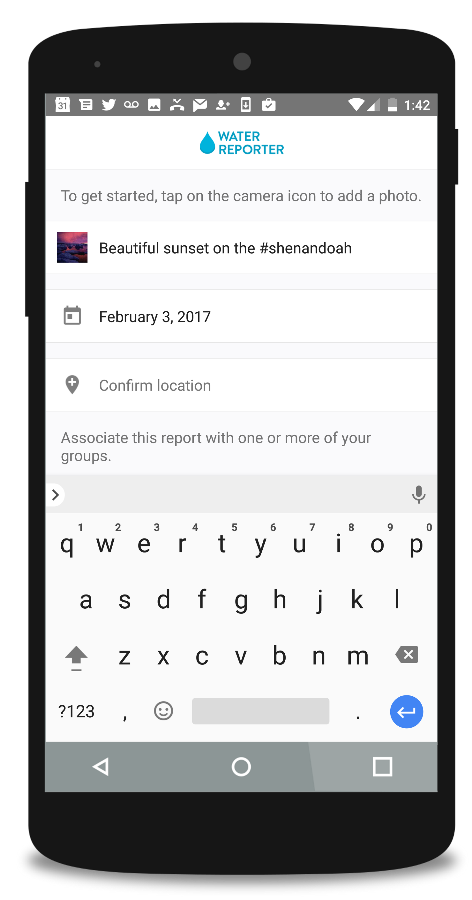We’ll automatically plug the date for you but if this is a report from a previous time out on the water, tap the calendar button and choose the right day.
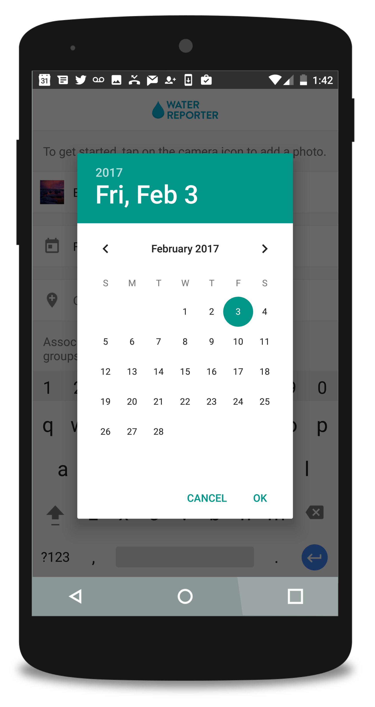Grabbing your location is a snap. Tap on the map pin and Water Reporter will plot your location. You can always move the map to fine tune and when you are done tap the check mark in the top right corner.
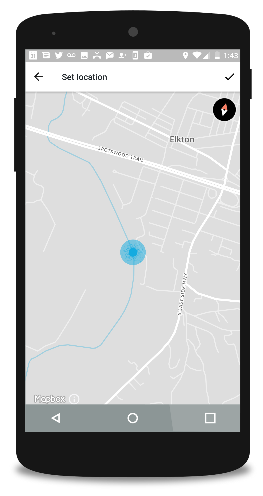If you’ve joined groups, you can flip the bottom of the screen to make sure group administrators are notified that you’ve shared the report. Keep in mind you can always go back and edit a report’s date, comments, location, or group(s). Tap the send button and it’s off! Next let’s talk about notifications and comments so you can connect with others in the community.
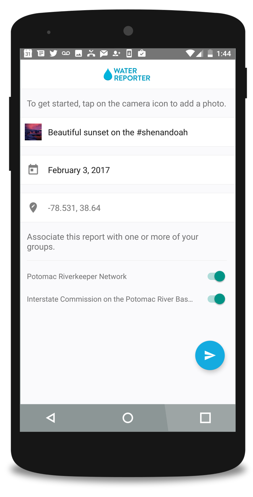Connect
In Water Reporter, people form connections by joining organizations, sharing reports, and commenting through report threads. Whether you are keeping track of your favorite places to paddle, helping engaged community members tackle a stream cleanup, or identifying algal blooms for a citizen science campaign, Water Reporter makes it seamless for everyone to stay connected via one easy to use platform. Turn on notifications and you will always be kept in the loop when someone comments or takes action on a report via automated email notifications.
From your profile, tap on the gear and scroll down to where you see two switches. Flipping one or both of these to on, will allow Water Reporter to send you email notifications anytime an individual comments on your report or marks pollution reports as resolved.
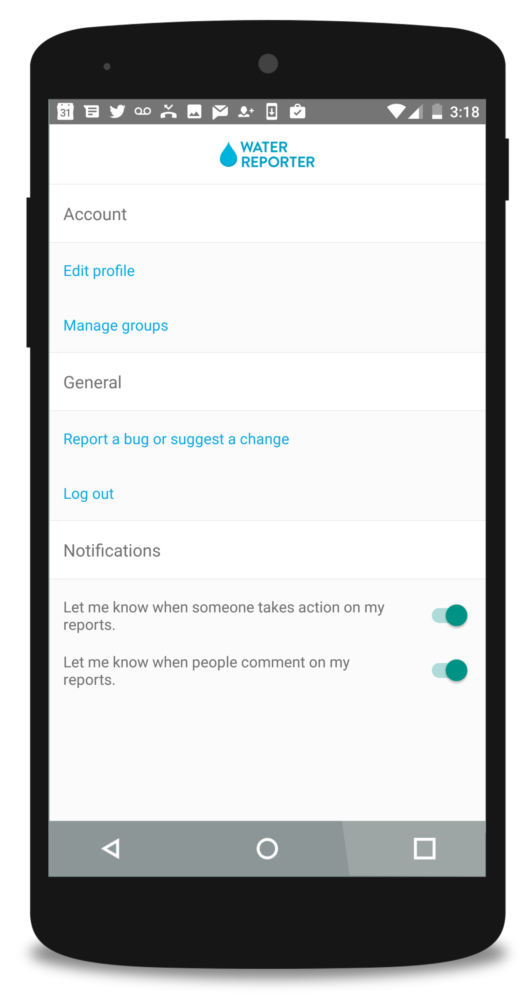Comments are a great way to start the conversation around a specific report of interest. You can comment on any report in the community by tapping on the comment bubble of open reports or blue badge where actions have been taken. Tapping on the photo icon will let you take a picture or upload one on your camera roll. If others in the thread have their notifications turned on, we’ll send them an email letting them know you’ve added your ten cents to the report thread.
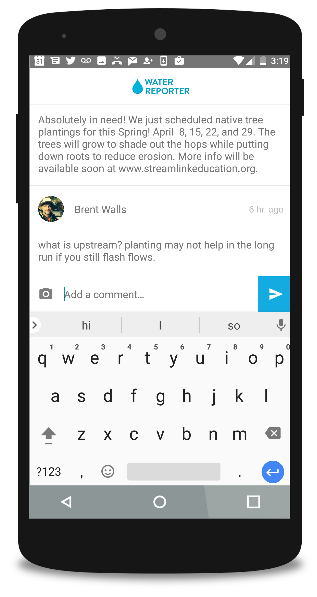If your notifications are turned on, we’ll make sure you receive emails any time someone comments or marks your report as resolved. Our notifications look like this:
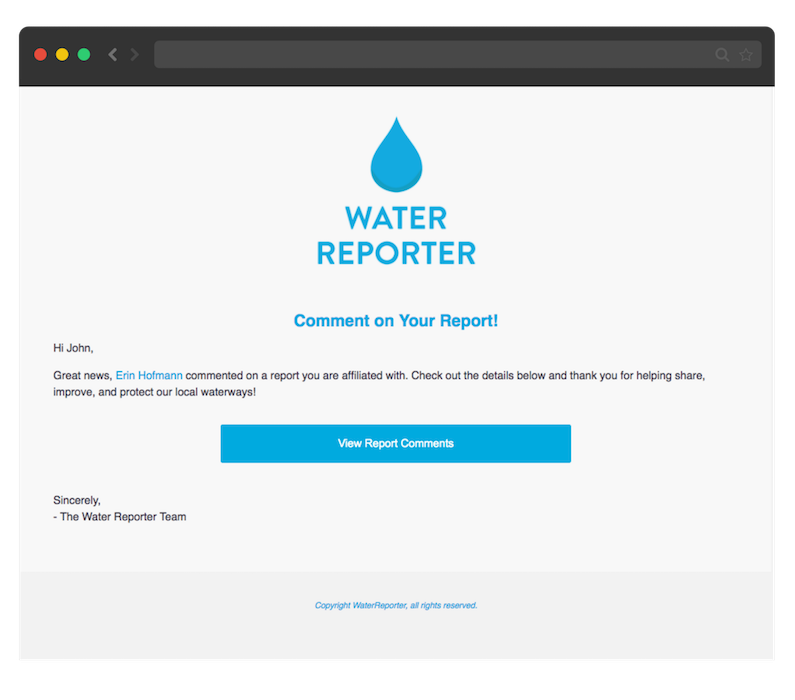If you’ve joined groups, you can flip the toggle at the bottom of the screen to make sure group administrators are notified that you’ve shared the report. Keep in mind you can always go back and edit a report’s date, comments, location, or group(s)
Tap the send button and it’s off! Next let’s talk about notifications and comments so you can connect with others in the community.
Sharing a Report
Posting reports to Water Reporter is a fast and easy way to build a living map of your experiences on your favorite lake, river, or ocean. Each observation allows you to add a photo, some comments and hashtags, as well as a location. If you are using Water Reporter as part of an organization led citizen science or pollution reporting campaign, you can conveniently share reports directly to a group. In this section of the help docs, we’ll go through some tips that will make sharing your observations even easier.Post to Water Reporter
From the main activity feed, tap the camera (submit) button, located in the bottom navigation bar of the application. Tap the comment body and type a few brief sentences about what’s happening. Remember, you can always use hashtags to classify your report with others like it in the community. Tap on the camera to either snag a photo or add one from your photo roll.
We’ll automatically plug the date for you but if this is a report from a previous time out on the water, tap the calendar button and choose the right day.
Grabbing your location is a snap. Tap on the map pin and Water Reporter will plot your location. You can always move the map to fine tune and when you are done tap the check mark in the top right corner.
If you’ve joined groups, you can flip the toggle at the bottom of the screen to make sure group administrators are notified that you’ve shared the report. Keep in mind you can always go back and edit a report’s date, comments, location, or group(s). Tap the send button and it’s off! Next let’s talk about notifications and comments so you can connect with others in the community.
What happens next?
We post your report to the community and make it available for everyone to see. If you’ve shared your report with an organization, we’ll make sure they are notified via email. Water Reporter will also affiliate the appropriate watershed with your report so that it can be explored by others.
Helpful Tip
If you would like to receive emails when someone comments on your report or takes a remedial action, make sure you notifications are switched to “on” in your profile settings
Using Hashtags
Hashtags are a fantastic way to categorize all of your reports by a specific topic of interest. It’s also a useful method for easily viewing other water related observations that are trending within the Water Reporter Community. You can use hashtag at the time of posting or editing a report as well as within report comments. To get started using hashtags follow the steps below.
-
Start with report description or comments
Begin adding hashtags mid sentence or by appending them to the end of your report. Add a “#” in front of any word or combination of words.
-
Select from the dropdown or keep typing
As you type a list of suggestions will appear. Select one that matches or keep typing to create a new one. Appropriate hashtags look something like this: “#sediment #erosion” that said, we cannot work with things that look like the following: “#sediment#erosion” or “#sediment, #erosion.”
-
Keep it simple
With hashtags it’s better to use simple short words and phrases. There is no need to add special characters or punctuation. Here are some great examples of how hashtags will appear in our community: #sediment or #erosion
Sharing a Report to Social Media
Water Reporter makes it easy for community members to share posts outside the community to Twitter and Facebook. This exponentially increases the visibility of your reports and allows you to connect with others who have yet to register for a Water Reporter account. To get started cross posting, follow the simple steps below.
2. Select Facebook or Twitter
Depending on the social media platforms you have installed on your device, look for Facebook or Twitter and tap the icon. For the sake of this demo, we’ll pick Facebook.
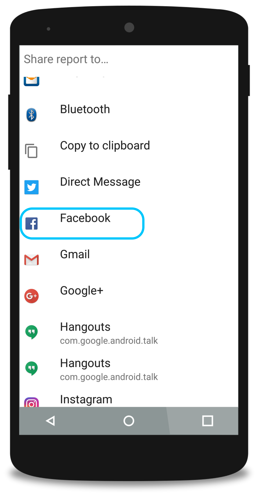3. Add Post Comments
Since we’ll be sharing this post to our Facebook status, we can add a few comments, note how we have pulled in the report image as the header for your post.
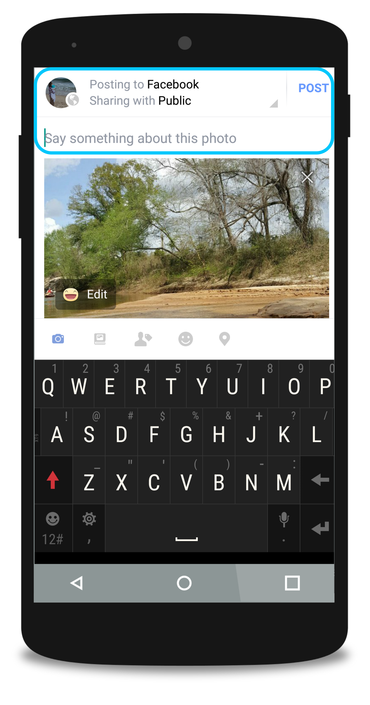4. Add Post Comments
Great work, you’ve now added your Water Reporter post to Facebook and will receive all the like, comments, and interactions this community supports!
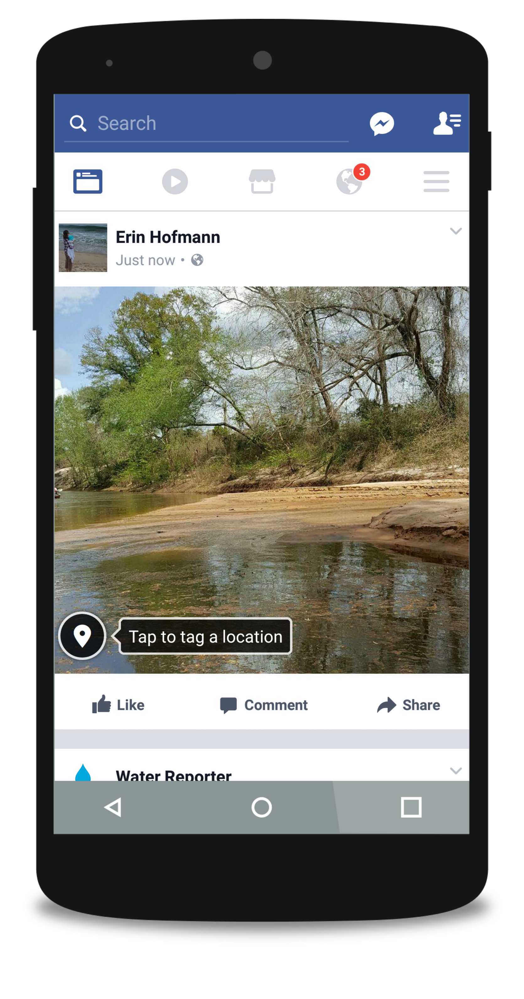Groups
One of Water Reporter’s major roles as a platform is to unite watershed restoration efforts. Our community’s group features provide an outlet for both organizational leads and everyday Water Reporter users to connect via reports. Organizations in Water Reporter are active leaders in watershed restoration efforts and currently consist of small watershed organizations, national NGOs, and even government agencies. Joining an organization in Water Reporter affiliates your profile with their dedicated page, allows you to share reports to support their crowdsourcing initiatives, and work together to actively improve water quality. Here are some examples of how to get started with groups.
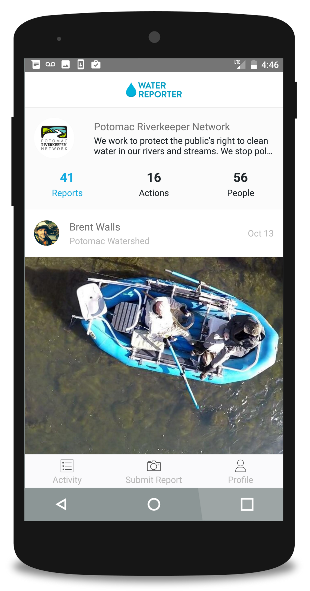Why join groups?
-
Help collect observations for a specific initiative
Often organizations in Water Reporter will ask for help from their volunteers to collect observations related to water quality issues such as algae blooms, trash sites, or erosion. Your reports provide vital data that our organizations can use to inform where cleanups should occur and where restoration should happen.
-
Stay current with local watershed improvement efforts
Groups are a fast and easy way to access and interact with the most recent reports shared by users of similar interests and regions.
-
Notify an active base of restoration professionals
As a unified network, we can work together to identify threats to water quality and take action to improve our local resources. Sharing a report with a group such as a watershed organization allows all members to be notified and they can take action on your report.
- Opt-in/Opt-out of email notifications when someone comments on my report
- Opt-in/Opt-out of email notifications when an administrator marks one of my reports as resolved
- Opt-in/Opt-out of email notifications when a user joins a group I administer
- Opt-in/Opt-out of email notifications when a user comments on a report in a group I administer
- Opt-in/Opt-out of email notifications when a user comments on a report in a watershed I administer
- Opt-in/Opt-out of email notifications when a user submits a report to an organization I administer
- Opt-in/Opt-out of email notifications when a user submits a report to a watershed I administer
How to Join a Group
We provide many opportunities for you to join groups in Water Reporter. Currently our community supports joining groups at the time of registration as well as managing groups via your profile settings. This help section will take you through managing groups via your profile. To learn how to join groups at registration time, please refer to our signup instructions on step 3 of our quick start.
1. Navigate to your profile
Locate the profile icon in the bottom right corner of Water Reporter and tap it. This will bring you to your profile page where you can view your reports, actions (if applicable), and groups. Tap on the profile settings gear in the top right corner.
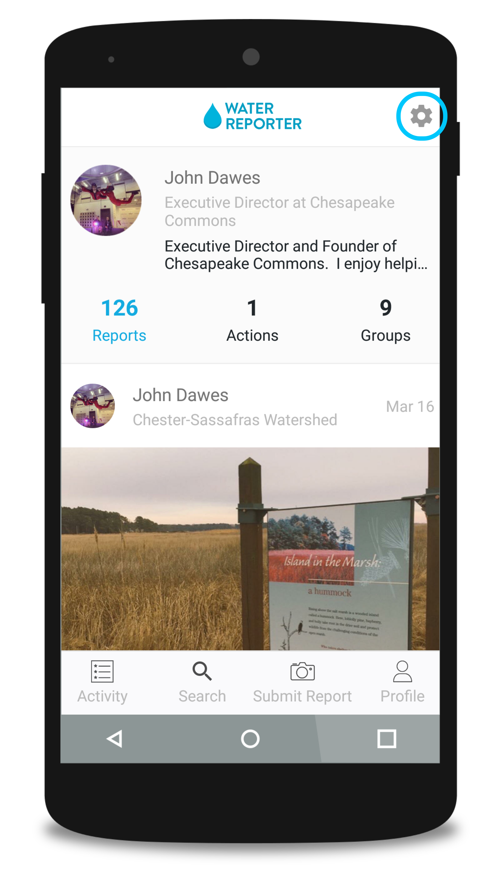2. Tap manage groups
In the profile settings view, you will see a variety of elements for managing your profile, managing notifications, and managing groups. Tap on manage groups.
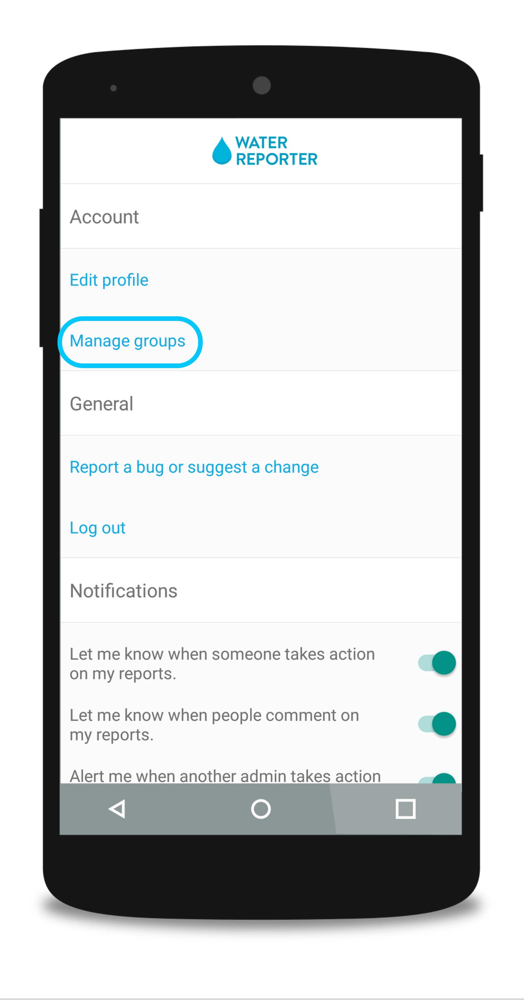3. Search and Join
If you see the group you want to join, click the join button. If you don’t see the group you can search for it. When you tap “join group” a notification will be sent to the group administrators letting you know you have joined. You can leave at anytime and if you don’t see a group you in Water Reporter, send us a note.
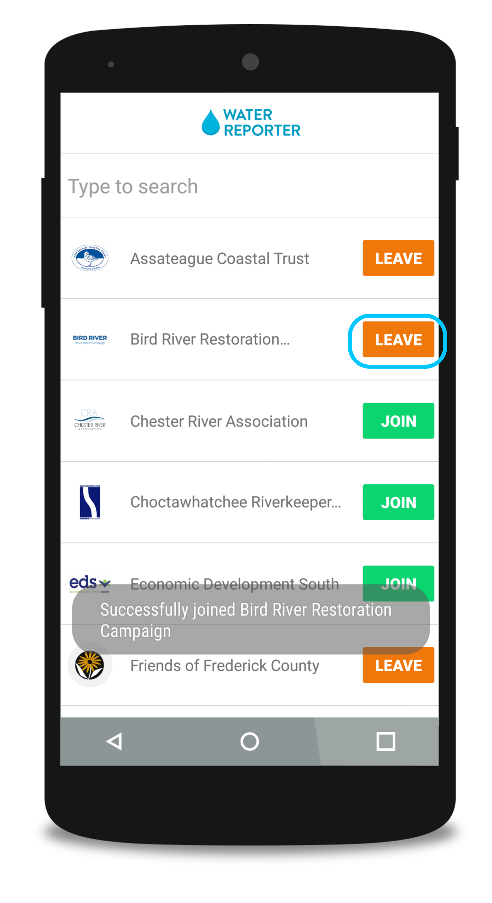4. Success
Nice! You are now affiliated with a new group and it will appear in your profile. You can also share reports with this organization by flipping the group name toggle when sharing a report.
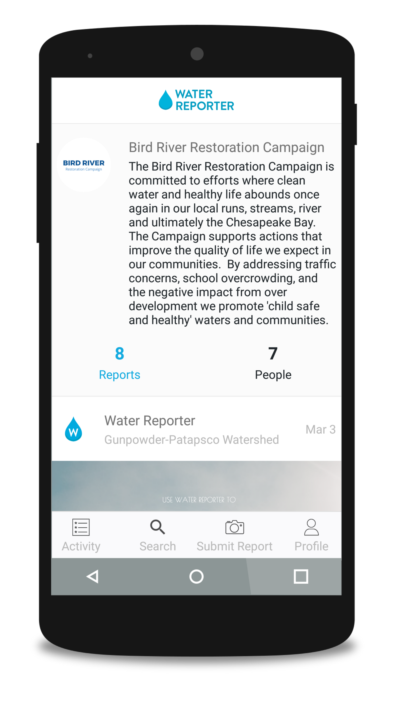Become a Group
Does your organization have a citizen pollution reporting program? Do you need to easily collect volunteer geo-referenced observations in your watershed? Water Reporter provides tools for restoration professionals to access reports submitted to the community and track remediation. Collectively, restoration professionals and users are creating a national network of people watching over our waterways.
As a Water Reporter administrator, you gain access to communication tools that help you reach out to your networks and inform your volunteers of the actions that you and your organization are taking to improve water quality. We are also working to deploy a line of services that will allow you to easily manage, map, and share quantitative water quality monitoring data.
To view a full list of features and costs associated with Water Reporter for Organizations, check out our Plans and Pricing page. We have a list of FAQs and if you still have questions, please feel free to contact us directly.
Feature Overview
| 1 | Resolve reports submitted by your volunteers |
|---|---|
| 2 | Manage your organization’s profile |
| 3 | Get notified anytime a report is submitted in a watershed of interest |
| 4 | Get notified anytime a report is submitted to your organization |
| 5 | Download reports in a.CSV or .GeoJSON format for third party applications |
Notifications
Water Reporter supports a diverse and reliable set of email notifications that keeps everyone in the loop. Whether you are an administrator of a volunteer monitoring program in Water Reporter or simply trying to start the discussion by commenting on a report, we provide a flexible means to stay on top of the latest activity while also being able to turn off the chatter. Below is a helpful comparison by user type of the of notifications you can turn on or off in your profile settings.
Notification List by User Type
Configure Notifications
Configuring notifications is as easy as flipping a switch. Upon registering for an account with Water Reporter, our system will not send you emails until you switch your notifications on in the mobile app. Out of the box, you can opt-in for emails anytime a user comments on your report or when an administrator marks your report as resolved. Follow the steps below:
1. Navigate to your profile
Locate the profile icon in the bottom right corner of Water Reporter and tap it. This will bring you to your profile page where you can view your reports, actions (if applicable), and groups. Tap on the profile settings gear in the top right corner.
2. Locate Notifications
In the profile settings view, you will see a variety of elements for managing your profile, managing notifications, and managing groups. Locate the toggles at the bottom and configure as desired.
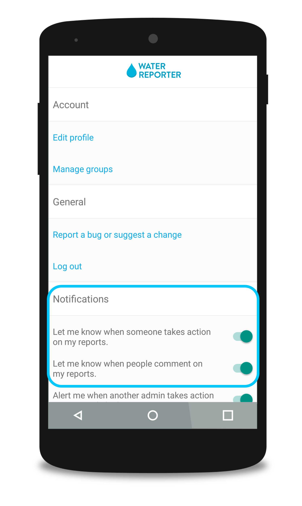3. Success!
If you see the group you want to join, click the join button. If you don’t see the group you can search for it. When you tap “join group” a notification will be sent to the group administrators letting you know you have joined. You can leave at anytime and if you don’t see a group you in Water Reporter, send us a note.
Media Kit Last Updated March 28, 2017
Contents
| 1 | Water Reporter brand manual |
|---|---|
| 2 | Horizontal, stacked, and mark only logo in .png, .ai, and .svg file formats/td> |
| 3 | Screenshots for native IPhone application |
| 4 | Screenshots for native Android application |